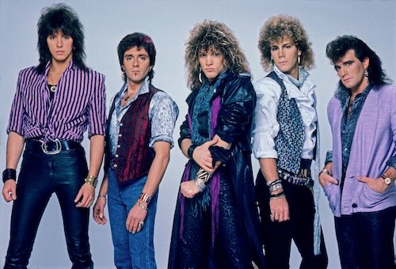

The Band
Bon Jovi is an American rock band formed in 1983 in Sayreville, New Jersey. It consists of singer Jon Bon Jovi, keyboardist David Bryan, drummer Tico Torres, guitarist Phil X, and bassist Hugh McDonald. Previous bassist Alec John Such was dismissed in 1994, and longtime guitarist and co-songwriter Richie Sambora left in 2013.
In 1984 and 1985, Bon Jovi released their first two albums and their debut single "Runaway" managed to crack the Top 40. In 1986, the band achieved widespread success and global recognition with their third album, Slippery When Wet, which sold over 20 million copies and included three Top 10 singles, two of which reached No. 1 ("You Give Love a Bad Name" and "Livin' on a Prayer") Their fourth album, New Jersey (1988), was also very successful, selling over 10 million copies and featuring five Top 10 singles (a record for a hard rock album), two of which reached No. 1 ("Bad Medicine" and "I'll Be There for You"). After the band toured and recorded extensively during the late 1980s, culminating in the 1988–90 New Jersey Tour, Jon Bon Jovi and Richie Sambora released successful solo albums in 1990 and 1991, respectively.